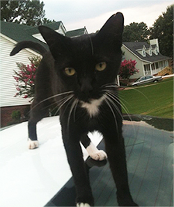

Miss Kitty
Female
Orange, white, and gray, Calico
Missing since 10/30/2014
Laurel District, Oakland
Please contact:
5115.981.1222
$100 Reward
Step 3: Please review your ad.
Oreo
Male
Black and White, Tuxedo
Missing since 10/30/2014
Laurel District, Oakland
5115.981.1222
$200 Reward